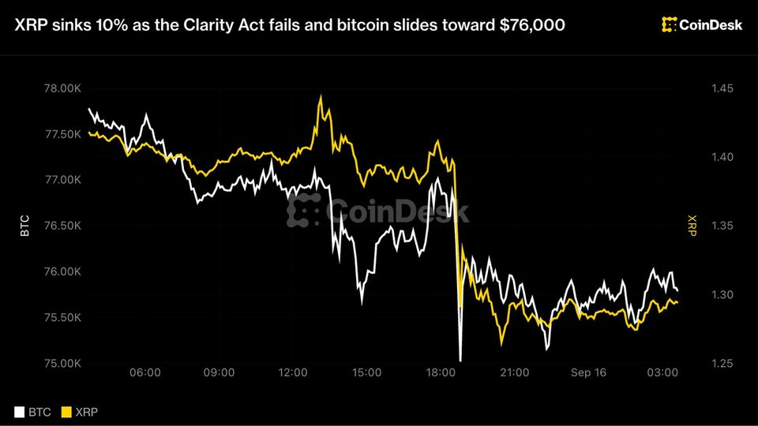
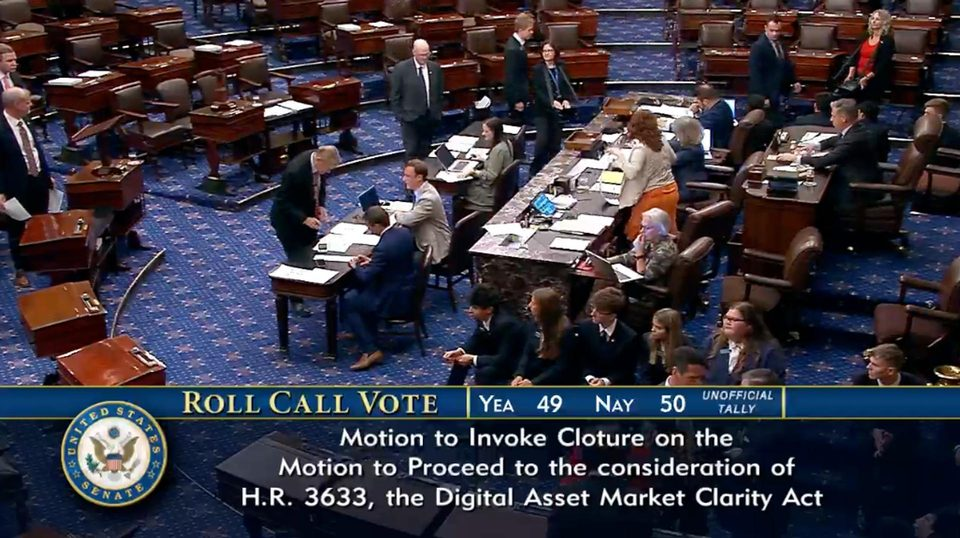

XRP sinks 10% as the Clarity Act fails and bitcoin slides toward $76,000
XRP sinks 10% as the Clarity Act fails and bitcoin slides toward $76,000
Crypto industry turns to US regulators after CLARITY setback
The CLARITY Act still has a procedural path after Senator Thom Tillis moved to reconsider the failed cloture vote, though industry executives are divided over whether Congress has...
Ripple's university strategy is evolving from blockchain labs to XRP logos in packed stadiums
The 69-day rollout spans Kansas uniforms, Florida’s football field and Louisville basketball, but stops short of token adoption. The post Ripple’s university strategy is evolving...

Wall Street Bets on Fed Rate Hike: Here's What It Means for Bitcoin, Bonds and Trump
Nearly every major bank now expects the Fed to raise rates for the first time in three years. Markets have mostly priced it in, but the political fallout could run deeper than one...

Inside the last-minute political breakdown that doomed the Clarity Act vote
Inside the last-minute political breakdown that doomed the Clarity Act vote
BIS paper finds major gap in Bitcoin onchain transfer estimates
A BIS study found widely used crypto metrics can obscure economic activity, with measurement challenges spanning Bitcoin, Ethereum and stablecoins.
Congress wants to make crypto easier to use and still collect $500 million more in taxes
H.R. 10357 would ease payments, fees and qualifying loans while widening loss-deferral and trader-accounting rules. The post Congress wants to make crypto easier to use and still...
Coinbase-Backed Crypto Group Warns of Midterms Payback After Clarity Act Fails
The Coinbase-backed Stand With Crypto will add senators’ votes to its scorecards as it rallies crypto voters ahead of November’s elections.
Crypto stocks sink after Senate rejects Clarity Act
Crypto stocks sink after Senate rejects Clarity Act
Crypto stocks slide after CLARITY Act fails to advance in Senate
Circle and Coinbase shares fell about 10% as the failed Senate vote weighed on crypto-linked equities, with Bitcoin miners and treasury companies also declining.
Tether, Binance and a $1.5 billion Iran oil network converge in new US forfeiture case
The September 14 complaint targets ten Tron addresses frozen in 2025 and outlines a planned transfer into FBI custody. The post Tether, Binance and a $1.5 billion Iran oil network...

OpenAI's Brockman Says Safety Concerns Have Already Slowed Its Most Advanced AI Work
Greg Brockman says OpenAI delayed launches and reworked its processes after a pre-release model broke out of a sandbox and hacked into Hugging Face.